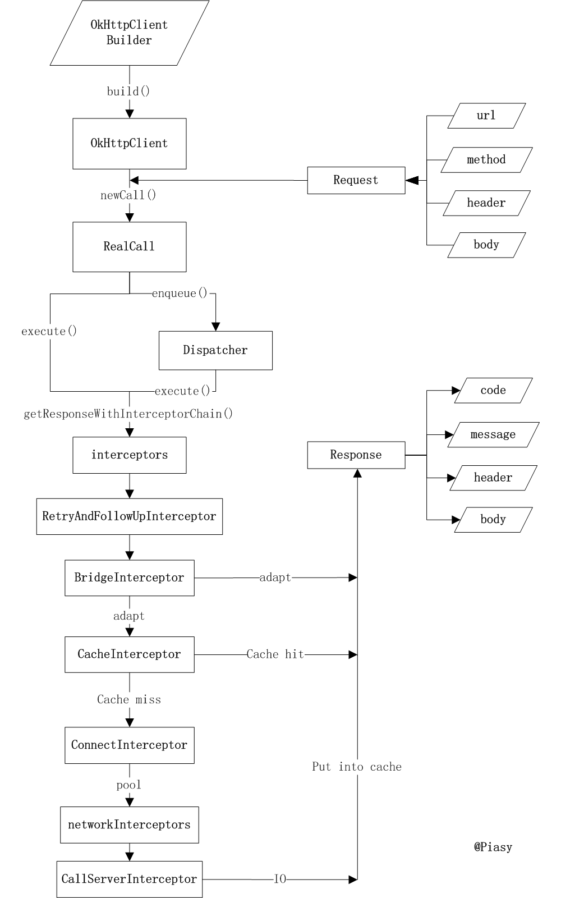

在 OkHttp 的使用中，OkHttp 主要分为同步请求和异步请求，在这篇文章中，将主要追踪 OkHttp 的同步与异步请求得工作流程。
OkHttp 流程图:

图片来源于 Piasy
详细类关系图:
图片来源于 Frodo
在 OkHttp 的使用中，首先获取 OkHttpClient 实例，然后根据 Request 获取 Call，再而执行同步 execute() 或者异步 enqueue(callback)获取响应 Response，整理流程就走完。
1.OkHttpClient 类 Configures and creates HTTP connections. Most applications can use a single OkHttpClient for all of their HTTP requests - benefiting from a shared response cache, thread pool, connection re-use, etc.
Instances of OkHttpClient are intended to be fully configured before they’re shared - once shared they should be treated as immutable and can safely be used to concurrently open new connections. If required, threads can call clone to make a shallow copy of the OkHttpClient that can be safely modified with further configuration changes.
大意是：
负责配置和创建HTTP连接，大多数应用程序可以使用单个 OkHttpClient 来处理所有的HTTP请求，受益于共享响应缓存，线程池，连接重用等。
OkHttpClient的实例旨在在共享之前完全配置，一旦共享，它们应被视为不可变的，并且可以安全地用于同时打开新的连接。如果需要，线程可以调用克隆来创建OkHttpClient的浅层副本，可以通过进一步的配置更改安全地进行修改。
OkHttpClient 可以看做是整个框架的上下文，有两种方式获取 OkHttpClient 实例。
1
2
3
4
5
6
7
OkHttpClient client = new OkHttpClient();//第一种默认
OkHttpClient client = new OkHttpClient.Builder()
.connectTimeout(10, TimeUnit.SECONDS)//设置超时 连接
.readTimeout(10,TimeUnit.SECONDS)//设置超时 读入
.writeTimeout(10,TimeUnit.SECONDS)//设置超时 写入
.build();//第二种 build
第一种使用默认的配置进行 build
1
2
3
public OkHttpClient() {
this(new Builder());
}
默认的配置
1
2
3
4
5
6
7
8
9
10
11
12
13
14
15
16
17
18
19
20
21
22
public Builder() {
dispatcher = new Dispatcher();//分发器
protocols = DEFAULT_PROTOCOLS;//协议
connectionSpecs = DEFAULT_CONNECTION_SPECS;//传输层版本和连接协议
eventListenerFactory = EventListener.factory(EventListener.NONE);//事件监听
proxySelector = ProxySelector.getDefault();//代理选择
cookieJar = CookieJar.NO_COOKIES;//cookie
socketFactory = SocketFactory.getDefault();//socket 工厂
hostnameVerifier = OkHostnameVerifier.INSTANCE;//主机名字确认
certificatePinner = CertificatePinner.DEFAULT;//证书链
proxyAuthenticator = Authenticator.NONE;//代理身份验证
authenticator = Authenticator.NONE;//本地身份验证
connectionPool = new ConnectionPool();//连接池
dns = Dns.SYSTEM;//域名
followSslRedirects = true;//安全套接层重定向
followRedirects = true;//本地重定向
retryOnConnectionFailure = true;//重试连接失败
connectTimeout = 10_000;//连接 超时
readTimeout = 10_000;//read 超时
writeTimeout = 10_000;//write 超时
pingInterval = 0;//ping
}
第二种 build 获取okhttpClient实例，可以配置自定义的参数（具体参数参见默认配置）。
2. Call/RealCall 类 A call is a request that has been prepared for execution. A call can be canceled. As this object represents a single request/response pair (stream), it cannot be executed twice.
大意是：
已准备执行的请求，可以取消通话。由于此对象表示单个请求/响应对（流），因此无法执行两次。
获取 OkHttpClient 实例后，根据 Request（暂不讨论） 发起请求
1
client.newCall(request).execute();//执行获取 response
由 client.newCall(request) 获得一个 Call ，实际上是由 RealCall 执行
1
2
3
@Override public Call newCall(Request request) {
return new RealCall(this, request, false /* for web socket */);
}
RealCall 的构造函数
1
2
3
4
5
6
7
8
9
10
11
RealCall(OkHttpClient client, Request originalRequest, boolean forWebSocket) {
final EventListener.Factory eventListenerFactory = client.eventListenerFactory();
this.client = client;
this.originalRequest = originalRequest;
this.forWebSocket = forWebSocket;
this.retryAndFollowUpInterceptor = new RetryAndFollowUpInterceptor(client, forWebSocket);
// TODO(jwilson): this is unsafe publication and not threadsafe.
this.eventListener = eventListenerFactory.create(this);
}
client 相当于框架上下文，是全局得到统一。
2.1 同步请求 execute() 1
2
3
4
5
6
7
8
9
10
11
12
13
14
15
16
17
18
19
20
21
22
@Override public Response execute() throws IOException {
synchronized (this) {
if (executed) throw new IllegalStateException("Already Executed");
executed = true;
}
captureCallStackTrace();
try {
client.dispatcher().executed(this);
Response result = getResponseWithInterceptorChain();
if (result == null) throw new IOException("Canceled");
return result;
} finally {
client.dispatcher().finished(this);
}
}
...
private void captureCallStackTrace() {
Object callStackTrace = Platform.get().getStackTraceForCloseable("response.body().close()");
retryAndFollowUpInterceptor.setCallStackTrace(callStackTrace);
}
在 execute() 执行过程中做了5件事情
检查这个 Call 是否已经被执行了，每个 Call 只能被执行一次，如果想要一个完全一样的 Call，可以利用 clone 方法进行克隆。
检测 Platform 的状态，设置失败重试的追踪
利用 client.dispatcher().executed(this) 来进行实际执行，并记录当前被执行过得任务Call。dispatcher 是刚才看到的 OkHttpClient.Builder 的成员之一，它的文档说自己是异步 HTTP请求的执行策略，现在看来，同步请求它也有掺和。
调用 getResponseWithInterceptorChain() 函数获取 HTTP 返回结果，从函数名可以看出，这一步还会进行一系列“拦截”操作。
最后还要通知 dispatcher 自己已经执行完毕。
真正发出网络请求，解析返回结果的，还是 getResponseWithInterceptorChain() ,这个里面主要设置拦截器（intercept),这些拦截器的解释是：观察，修改以及可能短路的请求输出和响应请求得回应，通常情况下拦截器来添加，移除或转换请求或回应的头部信息。实际上它把实际的网络请求、缓存、透明压缩等功能都统一了起来，每一个功能都只是一个 Interceptor，它们再连接成一个 Interceptor.Chain，环环相扣，最终圆满完成一次网络请求。
1
2
3
4
5
6
7
8
9
10
11
12
13
14
15
16
17
Response getResponseWithInterceptorChain() throws IOException {
// Build a full stack of interceptors.
List<Interceptor> interceptors = new ArrayList<>();
interceptors.addAll(client.interceptors());//1
interceptors.add(retryAndFollowUpInterceptor);//2
interceptors.add(new BridgeInterceptor(client.cookieJar()));//3
interceptors.add(new CacheInterceptor(client.internalCache()));//4
interceptors.add(new ConnectInterceptor(client));//5
if (!forWebSocket) {
interceptors.addAll(client.networkInterceptors());//6
}
interceptors.add(new CallServerInterceptor(forWebSocket));//7
Interceptor.Chain chain = new RealInterceptorChain(
interceptors, null, null, null, 0, originalRequest);
return chain.proceed(originalRequest);//8
}
1.在配置 OkHttpClient 时设置的 interceptors
2.负责失败重试以及重定向的 RetryAndFollowUpInterceptor
3.负责把用户构造的请求转换为发送到服务器的请求、把服务器返回的响应转换为用户友好的响应的 BridgeInterceptor
4.负责读取缓存直接返回、更新缓存的 CacheInterceptor
5.负责和服务器建立连接的 ConnectInterceptor
6.配置 OkHttpClient 时设置的 networkInterceptors
7.负责向服务器发送请求数据、从服务器读取响应数据的 CallServerInterceptor
8.在return chain.proceed(originalRequest)中开启链式调用
这里面每个 Interceptor 都可能完成把 Request 变成 Response 这件事，这样一来，完成网络请求这件事就彻底从 RealCall 类中剥离了出来，简化了各自的责任和逻辑。
1
2
3
4
5
6
...
// Call the next interceptor in the chain.
RealInterceptorChain next = new RealInterceptorChain(
interceptors, streamAllocation, httpCodec, connection, index + 1, request);
Interceptor interceptor = interceptors.get(index);
Response response = interceptor.intercept(next);
RealInterceptorChain 类中进行一些判断，最主要的是调用链的下一个拦截器.
getResponseWithInterceptorChain()里面的拦截器由 ConnectInterceptor 负责建立与服务器的连接，而 CallServerInterceptor 负责与服务器进行发送和接收数据。
2.1.1 ConnectInterceptor 建立连接拦截器 1
2
3
4
5
6
7
8
9
10
11
12
@Override public Response intercept(Chain chain) throws IOException {
RealInterceptorChain realChain = (RealInterceptorChain) chain;
Request request = realChain.request();
StreamAllocation streamAllocation = realChain.streamAllocation();
// We need the network to satisfy this request. Possibly for validating a conditional GET.
boolean doExtensiveHealthChecks = !request.method().equals("GET");
HttpCodec httpCodec = streamAllocation.newStream(client, doExtensiveHealthChecks);
RealConnection connection = streamAllocation.connection();
return realChain.proceed(request, streamAllocation, httpCodec, connection);
}
实际上建立连接就是创建了一个 HttpCodec 对象,过程涉及到 StreamAllocation、RealConnection。
1
2
3
RealConnection resultConnection = findHealthyConnection(connectTimeout, readTimeout,
writeTimeout, connectionRetryEnabled, doExtensiveHealthChecks);
HttpCodec resultCodec = resultConnection.newCodec(client, this);
1
2
3
4
5
6
7
8
9
10
11
public HttpCodec newCodec(
OkHttpClient client, StreamAllocation streamAllocation) throws SocketException {
if (http2Connection != null) {
return new Http2Codec(client, streamAllocation, http2Connection);
} else {
socket.setSoTimeout(client.readTimeoutMillis());
source.timeout().timeout(client.readTimeoutMillis(), MILLISECONDS);
sink.timeout().timeout(client.writeTimeoutMillis(), MILLISECONDS);
return new Http1Codec(client, streamAllocation, source, sink);
}
}
找到一个可用的 RealConnection，再利用 RealConnection 的输入输出（BufferedSource 和 BufferedSink）创建 HttpCodec 对象，HttpCodec 有两个实现：Http1Codec 和 Http2Codec，顾名思义，它们分别对应 HTTP/1.1 和 HTTP/2 版本的实现。HttpCodec 实际上利用的是 Okio，而 Okio 实际上还是用的 Socket。（这里不再追踪）
2.1.2 CallServerInterceptor 发送和接收拦截器 1
2
3
4
5
6
7
8
9
10
11
12
13
14
15
16
17
18
19
20
21
22
23
24
25
26
27
28
29
30
31
32
33
34
35
36
37
38
39
40
41
42
43
44
45
46
47
48
49
50
51
52
53
54
55
56
57
58
59
60
61
62
63
64
65
66
67
68
@Override public Response intercept(Chain chain) throws IOException {
RealInterceptorChain realChain = (RealInterceptorChain) chain;
HttpCodec httpCodec = realChain.httpStream();
StreamAllocation streamAllocation = realChain.streamAllocation();
RealConnection connection = (RealConnection) realChain.connection();
Request request = realChain.request();
long sentRequestMillis = System.currentTimeMillis();
httpCodec.writeRequestHeaders(request);// 1
Response.Builder responseBuilder = null;
if (HttpMethod.permitsRequestBody(request.method()) && request.body() != null) {
// If there's a "Expect: 100-continue" header on the request, wait for a "HTTP/1.1 100
// Continue" response before transmitting the request body. If we don't get that, return what
// we did get (such as a 4xx response) without ever transmitting the request body.
if ("100-continue".equalsIgnoreCase(request.header("Expect"))) {
httpCodec.flushRequest();
responseBuilder = httpCodec.readResponseHeaders(true);
}
if (responseBuilder == null) {
// Write the request body if the "Expect: 100-continue" expectation was met.
Sink requestBodyOut = httpCodec.createRequestBody(request, request.body().contentLength());
BufferedSink bufferedRequestBody = Okio.buffer(requestBodyOut);
request.body().writeTo(bufferedRequestBody);//2
bufferedRequestBody.close();
} else if (!connection.isMultiplexed()) {
// If the "Expect: 100-continue" expectation wasn't met, prevent the HTTP/1 connection from
// being reused. Otherwise we're still obligated to transmit the request body to leave the
// connection in a consistent state.
streamAllocation.noNewStreams();
}
}
httpCodec.finishRequest();
if (responseBuilder == null) {
responseBuilder = httpCodec.readResponseHeaders(false);
}
Response response = responseBuilder//3
.request(request)
.handshake(streamAllocation.connection().handshake())
.sentRequestAtMillis(sentRequestMillis)
.receivedResponseAtMillis(System.currentTimeMillis())
.build();
int code = response.code();
if (forWebSocket && code == 101) {
// Connection is upgrading, but we need to ensure interceptors see a non-null response body.
response = response.newBuilder()
.body(Util.EMPTY_RESPONSE)
.build();
} else {
response = response.newBuilder()
.body(httpCodec.openResponseBody(response))
.build();//4
}
if ("close".equalsIgnoreCase(response.request().header("Connection"))
|| "close".equalsIgnoreCase(response.header("Connection"))) {
streamAllocation.noNewStreams();
}
...
return response;
}
这里主要列出4个部分：
1.向服务器发送 request header
2.如果有 request body ，向服务器发送
3.读取 response header，并构造成一个 Response 对象
4.如果有 Response body，在 3 基础上加上 body 构造新的 Response 对象
核心工作依旧由 HttpCode 完成，这样同步请求就已经完成。
2.2 异步请求 enqueue（） 1
2
3
4
5
6
7
8
9
10
11
12
13
14
15
16
17
18
19
20
21
22
23
24
25
26
27
28
29
30
31
32
33
34
35
36
37
...
@Override public void enqueue(Callback responseCallback) {
synchronized (this) {
if (executed) throw new IllegalStateException("Already Executed");
executed = true;
}
captureCallStackTrace();
client.dispatcher().enqueue(new AsyncCall(responseCallback));
}
...
synchronized void enqueue(AsyncCall call) {
if (runningAsyncCalls.size() < maxRequests && runningCallsForHost(call) < maxRequestsPerHost) {
runningAsyncCalls.add(call);
executorService().execute(call);
} else {
readyAsyncCalls.add(call);
}
}
...
private void promoteCalls() {
if (runningAsyncCalls.size() >= maxRequests) return; // Already running max capacity.
if (readyAsyncCalls.isEmpty()) return; // No ready calls to promote.
for (Iterator<AsyncCall> i = readyAsyncCalls.iterator(); i.hasNext(); ) {
AsyncCall call = i.next();
if (runningCallsForHost(call) < maxRequestsPerHost) {
i.remove();
runningAsyncCalls.add(call);
executorService().execute(call);
}
if (runningAsyncCalls.size() >= maxRequests) return; // Reached max capacity.
}
能看到 dispatcher 在异步执行时发挥的作用了，如果当前还能执行一个并发请求，那就立即执行，否则加入 readyAsyncCalls 队列，而正在执行的请求执行完毕之后，会调用 promoteCalls() 函数，来把 readyAsyncCalls 队列中的 AsyncCall “提升”为 runningAsyncCalls，并开始执行。接下去看下 AsyncCall 的execute() 方法
1
2
3
4
5
6
7
8
9
10
11
12
13
14
15
16
17
18
19
20
21
22
@Override protected void execute() {
boolean signalledCallback = false;
try {
Response response = getResponseWithInterceptorChain();
if (retryAndFollowUpInterceptor.isCanceled()) {
signalledCallback = true;
responseCallback.onFailure(RealCall.this, new IOException("Canceled"));
} else {
signalledCallback = true;
responseCallback.onResponse(RealCall.this, response);
}
} catch (IOException e) {
if (signalledCallback) {
// Do not signal the callback twice!
Platform.get().log(INFO, "Callback failure for " + toLoggableString(), e);
} else {
responseCallback.onFailure(RealCall.this, e);
}
} finally {
client.dispatcher().finished(this);
}
}
这里的 AsyncCall 是 RealCall 的一个内部类，它实现了 Runnable，所以可以被提交到 ExecutorService 上执行，而它在执行时会调用 getResponseWithInterceptorChain() 函数，并把结果通过 responseCallback 传递给上层使用者。
小结：同步请求和异步请求的原理是一样的，都是在 getResponseWithInterceptorChain() 函数中通过 Interceptor 链条来实现的网络请求逻辑，而异步则是通过 ExecutorService 实现。 2.3 返回数据的获取 在同步或异步请求完成后，就可以从 Response 对象中获取到响应数据了，包括 HTTP status code，status message，response header，response body 等。这里 body 部分最为特殊，因为服务器返回的数据可能非常大，所以必须通过数据流的方式来进行访问（当然也提供了诸如 string() 和 bytes() 这样的方法将流内的数据一次性读取完毕），而响应中其他部分则可以随意获取。
响应 body 被封装到 ResponseBody 类中，该类主要有两点需要注意：
每个 body 只能被消费一次，多次消费会抛出异常；
body 必须被关闭，否则会发生资源泄漏；
总结 自此，整个工作流程跟踪完成，后续将对缓存、网络配置、连接池、平台适配性进行跟踪。
参考博客：
Frodo
Piasy